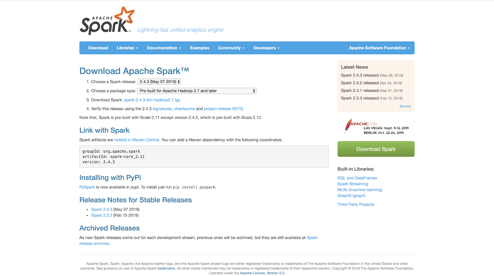
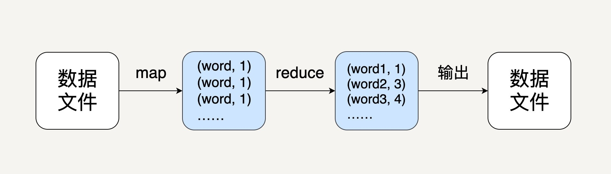
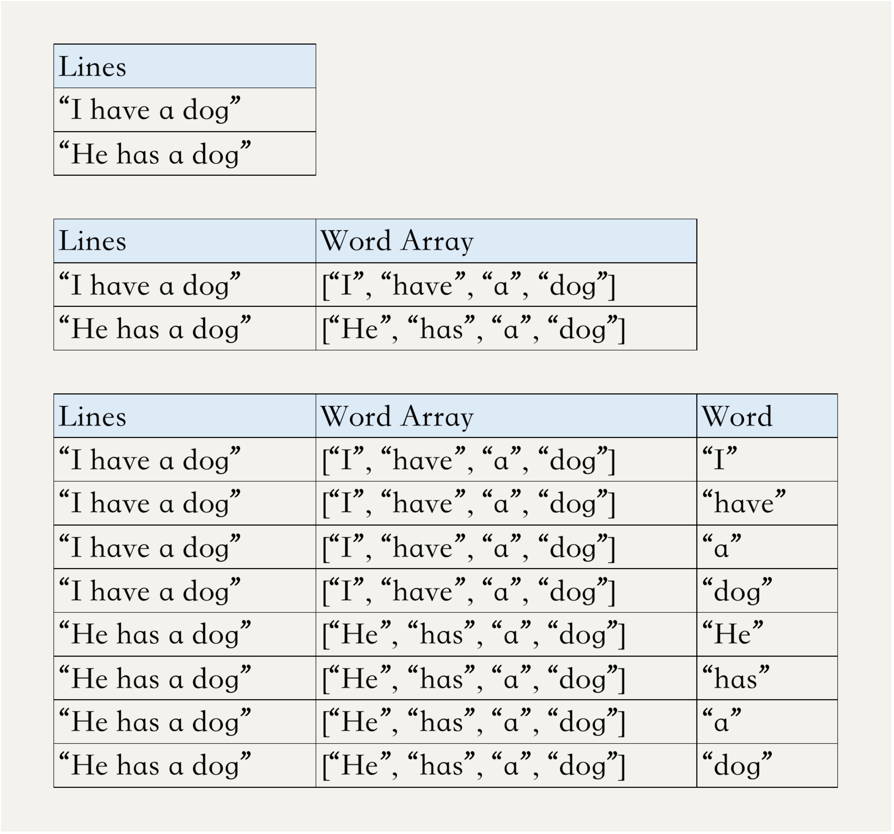

- 00 开篇词 从这里开始，带你走上硅谷一线系统架构师之路.md
- 01 为什么MapReduce会被硅谷一线公司淘汰？.md
- 02 MapReduce后谁主沉浮：怎样设计下一代数据处理技术？.md
- 03 大规模数据处理初体验：怎样实现大型电商热销榜？.md
- 04 分布式系统（上）：学会用服务等级协议SLA来评估你的系统.md
- 05 分布式系统（下）：架构师不得不知的三大指标.md
- 06 如何区分批处理还是流处理？.md
- 07 Workflow设计模式：让你在大规模数据世界中君临天下.md
- 08 发布_订阅模式：流处理架构中的瑞士军刀.md
- 09 CAP定理：三选二，架构师必须学会的取舍.md
- 10 Lambda架构：Twitter亿级实时数据分析架构背后的倚天剑.md
- 11 Kappa架构：利用Kafka锻造的屠龙刀.md
- 12 我们为什么需要Spark？.md
- 13 弹性分布式数据集：Spark大厦的地基（上）.md
- 14 弹性分布式数据集：Spark大厦的地基（下）.md
- 15 Spark SQL：Spark数据查询的利器.md
- 16 Spark Streaming：Spark的实时流计算API.md
- 17 Structured Streaming：如何用DataFrame API进行实时数据分析_.md
- 18 Word Count：从零开始运行你的第一个Spark应用.md
- 19 综合案例实战：处理加州房屋信息，构建线性回归模型.md
- 20 流处理案例实战：分析纽约市出租车载客信息.md
- 21 深入对比Spark与Flink：帮你系统设计两开花.md
- 22 Apache Beam的前世今生.md
- 23 站在Google的肩膀上学习Beam编程模型.md
- 24 PCollection：为什么Beam要如此抽象封装数据？.md
- 25 Transform：Beam数据转换操作的抽象方法.md
- 26 Pipeline：Beam如何抽象多步骤的数据流水线？.md
- 27 Pipeline IO Beam数据中转的设计模式.md
- 28 如何设计创建好一个Beam Pipeline？.md
- 29 如何测试Beam Pipeline？.md
- 30 Apache Beam实战冲刺：Beam如何run everywhere_.md
- 31 WordCount Beam Pipeline实战.md
- 32 Beam Window：打通流处理的任督二脉.md
- 33 横看成岭侧成峰：再战Streaming WordCount.md
- 34 Amazon热销榜Beam Pipeline实战.md
- 35 Facebook游戏实时流处理Beam Pipeline实战（上）.md
- 36 Facebook游戏实时流处理Beam Pipeline实战（下）.md
- 37 5G时代，如何处理超大规模物联网数据.md
- 38 大规模数据处理在深度学习中如何应用？.md
- 39 从SQL到Streaming SQL：突破静态数据查询的次元.md
- 40 大规模数据处理未来之路.md
- FAQ第一期 学习大规模数据处理需要什么基础？.md
- FAQ第三期 Apache Beam基础答疑.md
- FAQ第二期 Spark案例实战答疑.md
- 加油站 Practice makes perfect！.md
- 结束语 世间所有的相遇，都是久别重逢.md
18 Word Count：从零开始运行你的第一个Spark应用
你好，我是蔡元楠。
今天我们来从零开始运行你的第一个Spark应用。
我们先来回顾一下模块三的学习路径。
首先，我们由浅入深地学习了Spark的基本数据结构RDD，了解了它这样设计的原因，以及它所支持的API。
之后，我们又学习了Spark SQL的DataSet/DataFrame API，了解到它不仅提供类似于SQL query的接口，大大提高了开发者的工作效率，还集成了Catalyst优化器，可以提升程序的性能。
这些API应对的都是批处理的场景。
再之后，我们学习了Spark的流处理模块：Spark Streaming和Structured Streaming。两者都是基于微批处理（Micro batch processing）的思想，将流数据按时间间隔分割成小的数据块进行批处理，实时更新计算结果。
其中Structured Streaming也是使用DataSet/DataFrame API，这套API在某种程度上统一了批处理和流处理，是当前Spark最流行的工具，我们必需要好好掌握。
虽然学习了这么多API以及它们的应用，但是大部分同学还没有从零开始写一个完整的Spark程序，可能更没有运行Spark程序的经历。纸上谈兵并不能帮助我们在工作生活中用Spark解决实际问题。所以，今天我就和你一起做个小练习，从在本地安装Spark、配置环境开始，为你示范怎样一步步解决之前提到数次的统计词频（Word Count）的问题。
通过今天的学习，你可以收获：
- 怎样安装Spark以及其他相关的模块；
- 知道什么是SparkContext、SparkSession；
- 一个完整的Spark程序应该包含哪些东西；
- 用RDD、DataFrame、Spark Streaming如何实现统计词频。
这一讲中，我们使用的编程语言是Python，操作系统是Mac OS X。
在这一讲以及之前文章的例子中，我们都是用Python作为开发语言。虽然原生的Spark是用Scala实现，但是在大数据处理领域中，我个人最喜欢的语言是Python。因为它非常简单易用，应用非常广泛，有很多的库可以方便我们开发。
当然Scala也很棒，作为一个函数式编程语言，它很容易用链式表达对数据集进行各种处理，而且它的运行速度是最快的，感兴趣的同学可以去学习一下。
虽然Spark还支持Java和R，但是我个人不推荐你使用。用Java写程序实在有些冗长，而且速度上没有优势。
操作系统选Mac OS X是因为我个人喜欢使用Macbook，当然Linux/Ubuntu也很棒。
安装Spark
首先，我们来简单介绍一下如何在本地安装Spark，以及用Python实现的Spark库——PySpark。
在前面的文章中，我们了解过，Spark的job都是JVM（Java Virtual Machine）的进程，所以在安装运行Spark之前，我们需要确保已经安装Java Developer Kit（JDK）。在命令行终端中输入：
java -version
如果命令行输出了某个Java的版本，那么说明你已经有JDK或者JRE在本地。如果显示无法识别这个命令，那么说明你还没有安装JDK。这时，你可以去Oracle的官网去下载安装JDK，然后配置好环境变量。
同样，我们需要确保Python也已经被安装在本地了。在命令行输入“Python”或者“Python3”，如果可以成功进入交互式的Python Shell，就说明已经安装了Python。否则，需要去Python官网下载安装Python。这里，我推荐你使用Python3而不是Python2。
我们同样可以在本地预装好Hadoop。Spark可以脱离Hadoop运行，不过有时我们也需要依赖于HDFS和YARN。所以，这一步并不是必须的，你可以自行选择。
接下来我们就可以安装Spark。首先去Spark官网的下载界面。在第一个下拉菜单里选择最新的发布，第二个菜单最好选择与Hadoop 2.7兼容的版本。因为有时我们的Spark程序会依赖于HDFS和YARN，所以选择最新的Hadoop版本比较好。

下载好之后，解压缩Spark安装包，并且把它移动到/usr/local目录下，在终端中输入下面的代码。
$ tar -xzf ~/Dowmloads/spark-2.4.3-bin-hadoop2.7.tg
$ mv spark-2.4.3-bin-hadoop2.7.tgz /usr/local/spark
经过上述步骤，从官网下载并安装Spark的文件，这样我们便完成了Spark的安装。但是，Spark也是要进行相应的环境变量配置的。你需要打开环境变量配置文件。
vim ~/.bash_profile
并在最后添加一段代码。
export SPARK_HOME=/usr/local/spark
export PATH=$PATH:$SPARK_HOME/bin
这样，所需的步骤都做完之后，我们在命令行控制台输入PySpark，查看安装情况。如果出现下面的欢迎标志，就说明安装完毕了。
Welcome to
____ __
/ __/__ ___ _____/ /__
_\ \/ _ \/ _ `/ __/ '_/
/__ / .__/\_,_/_/ /_/\_\ version 2.4.3
/_/
Using Python version 2.7.10 (default, Oct 6 2017 22:29:07)
SparkSession available as 'spark'.
>>>
基于RDD API的Word Count程序
配置好所需的开发环境之后，下一步就是写一个Python程序去统计词语频率。我们都知道这个程序的逻辑应该是如下图所示的。

对于中间的先map再reduce的处理，我相信通过前面的学习，所有同学都可以用RDD或者DataFrame实现。
但是，我们对于Spark程序的入口是什么、如何用它读取和写入文件，可能并没有了解太多。所以，接下来让我们先接触一下Spark程序的入口。
在Spark 2.0之前，SparkContext是所有Spark任务的入口，它包含了Spark程序的基本设置，比如程序的名字、内存大小、并行处理的粒度等，Spark的驱动程序需要利用它来连接到集群。
无论Spark集群有多少个节点做并行处理，每个程序只可以有唯一的SparkContext，它可以被SparkConf对象初始化。
conf = SparkConf().setAppName(appName).setMaster(master)
sc = SparkContext(conf=conf)
这个appName参数是一个在集群UI上展示应用程序的名称，master参数是一个Spark、Mesos 或YARN的集群URL，对于本地运行，它可以被指定为“local”。
在统计词频的例子中，我们需要通过SparkContext对象来读取输入文件，创建一个RDD，如下面的代码所示。
text_file = sc.textFile("file://…...") //替换成实际的本地文件路径。
这里的text_file是一个RDD，它里面的每一个数据代表原文本文件中的一行。
在这些版本中，如果要使用Spark提供的其他库，比如SQL或Streaming，我们就需要为它们分别创建相应的context对象，才能调用相应的API，比如的DataFrame和DStream。
hc = HiveContext(sc)
ssc = StreamingContext(sc)
在Spark 2.0之后，随着新的DataFrame/DataSet API的普及化，Spark引入了新的SparkSession对象作为所有Spark任务的入口。
SparkSession不仅有SparkContext的所有功能，它还集成了所有Spark提供的API，比如DataFrame、Spark Streaming和Structured Streaming，我们再也不用为不同的功能分别定义Context。
在统计词频的例子中，我们可以这样初始化SparkSession以及创建初始RDD。
spark = SparkSession
.builder
.appName(appName)
.getOrCreate()
text_file = spark.read.text("file://….").rdd.map(lambda r: r[0])
由于SparkSession的普适性，我推荐你尽量使用它作为你们Spark程序的入口。随后的学习中，我们会逐渐了解怎样通过它调用DataFrame和Streaming API。
让我们回到统计词频的例子。在创建好代表每一行文本的RDD之后，接下来我们便需要两个步骤。
- 把每行的文本拆分成一个个词语；
- 统计每个词语的频率。
对于第一步，我们可以用flatMap去把行转换成词语。对于第二步，我们可以先把每个词语转换成（word, 1）的形式，然后用reduceByKey去把相同词语的次数相加起来。这样，就很容易写出下面的代码了。
counts = lines.flatMap(lambda x: x.split(' '))
.map(lambda x: (x, 1))
.reduceByKey(add)
这里counts就是一个包含每个词语的（word，count）pair的RDD。
相信你还记得，只有当碰到action操作后，这些转换动作才会被执行。所以，接下来我们可以用collect操作把结果按数组的形式返回并输出。
output = counts.collect()
for (word, count) in output:
print("%s: %i" % (word, count))
spark.stop() // 停止SparkSession
基于DataFrame API的Word Count程序
讲完基于RDD API的Word Count程序，接下来让我们学习下怎样用DataFrame API来实现相同的效果。
在DataFrame的世界中，我们可以把所有的词语放入一张表，表中的每一行代表一个词语，当然这个表只有一列。我们可以对这个表用一个groupBy()操作把所有相同的词语聚合起来，然后用count()来统计出每个group的数量。
但是问题来了，虽然Scala和Java支持对DataFrame进行flatMap操作，但是Python并不支持。那么要怎样把包含多个词语的句子进行分割和拆分呢？这就要用到两个新的操作——explode和split。split是pyspark.sql.functions库提供的一个函数，它作用于DataFrame的某一列，可以把列中的字符串按某个分隔符分割成一个字符串数组。
explode同样是pyspark.sql.functions库提供的一个函数，通俗点的翻译是“爆炸”，它也作用于DataFrame的某一列，可以为列中的数组或者map中每一个元素创建一个新的Row。
由于之前代码中创建的df_lines这个DataFrame中，每一行只有一列，每一列都是一个包含很多词语的句子，我们可以先对这一列做split，生成一个新的列，列中每个元素是一个词语的数组；再对这个列做explode，可以把数组中的每个元素都生成一个新的Row。这样，就实现了类似的flatMap功能。这个过程可以用下面的三个表格说明。

接下来我们只需要对Word这一列做groupBy，就可以统计出每个词语出现的频率，代码如下。
from pyspark.sql import SparkSession
from pyspark.sql.functions import *
if __name__ == "__main__":
spark = SparkSession
.builder
.appName(‘WordCount’)
.getOrCreate()
lines = spark.read.text("sample.txt")
wordCounts = lines
.select(explode(split(lines.value, " "))
.alias("word"))
.groupBy("word")
.count()
wordCounts.show()
spark.stop()
从这个例子，你可以很容易看出使用DataSet/DataFrame API的便利性——我们不需要创建（word, count）的pair来作为中间值，可以直接对数据做类似SQL的查询。
小结
通过今天的学习，我们掌握了如何从零开始创建一个简单的Spark的应用程序，包括如何安装Spark、如何配置环境、Spark程序的基本结构等等。
实践题
希望你可以自己动手操作一下，这整个过程只需要跑通一次，以后就可以脱离纸上谈兵，真正去解决实际问题。
欢迎你在留言中反馈自己动手操作的效果。
如果你跑通了，可以在留言中打个卡。如果遇到了问题，也请你在文章中留言，与我和其他同学一起讨论。
© 2019 - 2023 Liangliang Lee. Powered by gin and hexo-theme-book.